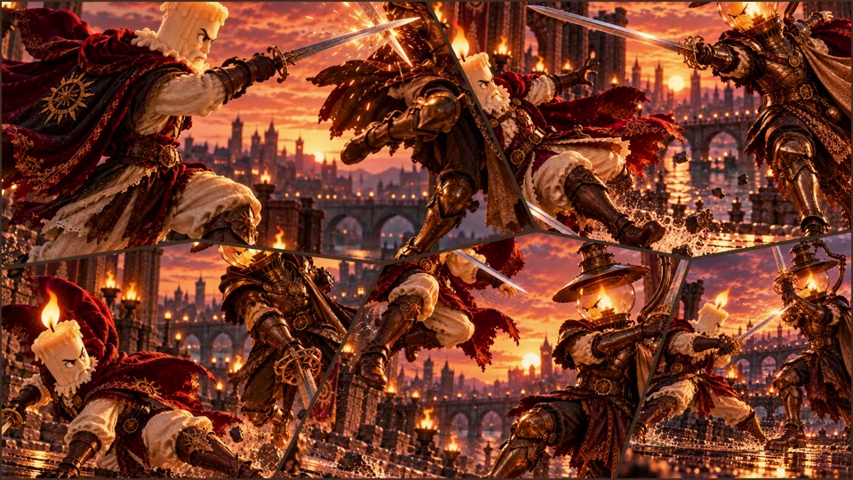
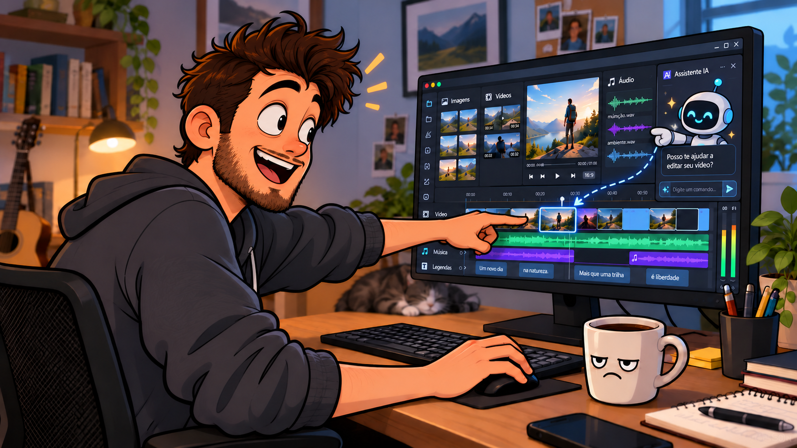

Trazer mais funções
para o editor.
Gere imagens, voz e legendas ou amplie a edição com serviços conectados.
Produza o material que falta dentro do editor.
 ESSENCIAL
ESSENCIALJunte imagens, vídeos, som e legendas. Organize as cenas, ajuste os detalhes e exporte seu vídeo.
No Reagência, você também pode gerar recursos por conexões de IA, pedir a um agente que opere o editor ou preparar um projeto por conversa.
Um editor transforma arquivos em uma sequência: define o que aparece, por quanto tempo e junto de qual som.
Tudo isso pode ser feito à mão no Reagência. A IA é uma possibilidade de trabalho, não uma etapa obrigatória.
Além da edição manual, três possibilidades ampliam sua forma de trabalhar.
Gere imagens, voz e legendas ou amplie a edição com serviços conectados.
Produza o material que falta dentro do editor.
Peça a um agente de IA que execute operações no projeto.
Poupe operações repetitivas e aprendizado dos controles.
Um chat de IA usa os mapas e regras para escrever um projeto compatível.
Descreva a montagem em vez de ajustar cada elemento.
Além de usar seus arquivos, você pode pedir recursos a serviços conectados, dentro do editor.
API é a conexão que permite ao editor usar um serviço externo. Cada conexão requer sua configuração.
De gerar recursos a editar a linha do tempo: a Agência pode usar as operações do editor para executar o que você pedir.
“Organize dez imagens, com 7,5 segundos cada, transições e movimento, sem revelar o fundo.”
Indique os materiais, o resultado e os detalhes que importam.
A Agência converte a orientação em operações no projeto.
Peça outro ajuste ou altere o resultado à mão.
Os mapas e as regras do framework mostram ao chat como montar um projeto que o Reagência entende.
O chat escreve a sequência, os tempos e os efeitos no projeto.
Cenas, tempos e efeitos organizados. O vídeo será exportado no editor.
Você confere e faz o acabamento normalmente.
Aqui, o chat cria o arquivo. Na Agência integrada, o agente atua no projeto já aberto.
Quatro exemplos ilustram o editor. No seu projeto, você pode combinar essas formas de trabalhar.
Os três primeiros usam o mesmo roteiro. O quarto é outro projeto, Caminho da Luz, criado por conversa com o framework.
Você explica o resultado e confere a execução. A Agência ou o chat com o framework organiza as operações.
ORIENTAÇÃO, RESUMIDA“Aplique movimento suave nestas imagens.”
Evite configurar o movimento clipe por clipe.
ORIENTAÇÃO, RESUMIDA“Cada imagem entra grande, diminui e ocupa seu lugar.”
Delegue recortes, posições e mudanças de tamanho.ORIENTAÇÃO, RESUMIDA“Distribua estas cenas pelas partes da música.”
Receba a sequência com tempos e transições definidos.Para quem começa, menos controles para dominar. Para quem já edita, menos operações para repetir. O acabamento continua nas suas mãos.
Edite pelos controles, gere o que falta, delegue uma tarefa ou prepare o projeto por conversa. Combine o que servir à sua necessidade.
romanwladyslawbrocki@gmail.com
Conte o que você quer criar.
Conheça o editor em uma demonstração.

O usuário recebe os materiais e constrói a edição nos controles do Reagência. Cada escolha acontece diretamente no projeto.
Controle direto sobre a montagem e cada detalhe.
Seis imagens, narração e legendas.
Organizar a sequência e a duração das cenas.
Aplicar transições e ajustar os movimentos.
Ver a prévia e gerar o vídeo final.
Com os recursos prontos, o usuário pede uma etapa por vez. A Agência executa as operações e mantém o projeto disponível para conferir e ajustar.
Três pedidos substituem a execução manual dessas etapas.
As mesmas imagens, narração e legendas do manual.
Um pedido distribui os materiais na linha do tempo.
Dois pedidos conectam e animam os clipes.
O usuário avalia a montagem e gera o vídeo.
O usuário fornece um roteiro breve e orientações. A Agência coordena a geração dos recursos e a edição dentro do Reagência.
Um pedido reúne geração de recursos e montagem.
O pedido explica o conteúdo e o resultado desejado.
Criar imagens, narração e legendas no editor.
Organizar as cenas, transições e movimentos.
O usuário pode ajustar e exportar normalmente.
O usuário definiu a visão criativa. Fora do editor, um ChatGPT comum recebeu recursos e framework e produziu o arquivo do projeto.
A montagem foi descrita em conversa, sem operar cada ajuste no editor.
O usuário orienta as cenas e escolhe as imagens.
Fornecer os recursos, seus endereços e os mapas do editor.
Máscaras, transições e movimentos seguem as partes da música.
O usuário faz o acabamento final no Reagência.
Cada mosaico combina recortes, posições, tamanhos e tempos. O chat escreveu essas operações no projeto a partir da direção do usuário e do framework.
Cada imagem começa ampliada e ocupa seu lugar. As anteriores continuam visíveis.
Criação e escolhas do usuário. Montagem pelo ChatGPT a partir dos mapas. Abertura, acabamento e exportação no Reagência.
Assistir no YouTube ↗É possível ajustar o enquadramento, animar zoom, posição e rotação, e trabalhar o tratamento de cor. O resultado pode ser conferido na prévia.
Ajustes de um clipe selecionado no percurso manual.
Abrir na apresentação completaDepois de conferir a montagem, o usuário escolhe as opções de exportação. O editor oferece MP4, MOV e WebM.
Opções reais de exportação no Reagência.
Abrir na apresentação completaNa preparação do manual e do híbrido, a primeira imagem nasceu de um texto. Cada uma das cinco seguintes usou a anterior como referência para manter a continuidade visual.
Segunda imagem gerada usando a anterior como referência.
Abrir na apresentação completaO roteiro aprovado deu origem a uma narração de 67,2 segundos. Nesta experiência, a geração da voz levou 11 segundos.
Narração com a voz Ash na preparação compartilhada.
Abrir na apresentação completaA partir da narração, o editor criou legendas editáveis. Nesta experiência, a transcrição levou 5 segundos e organizou a fala em 18 segmentos.
Transcrição da narração em legendas.
Abrir na apresentação completaAs conexões ampliam as funções do editor. A Agência é o agente que pode usar essas funções e operar o projeto conforme seu pedido.
A API conecta o editor ao serviço. No exemplo Agência plena, ela foi usada para imagens, voz, legendas e para o agente que opera a edição.
O aplicativo instalado pode gerar recursos e conectar a Agência ao projeto. Foi usado nas imagens do manual e do híbrido e nas novas gravações de edição por pedido.
Instalado e conectado, executa fluxos de geração previamente configurados.
No Caminho da Luz, o ChatGPT recebeu o framework e escreveu um JSON fora do editor. O Reagência abriu e exportou o projeto depois.
O uso depende da instalação ou configuração de cada conexão e das condições do serviço escolhido.
Explorar as conexõesCom as imagens já preparadas, o usuário pediu a montagem, as transições e os movimentos em uma mensagem.
Gostaria que adicionasse as imagens em ordem na timeline, cada uma por 7.5s. Coloque transições interessantes entre elas, pois são paisagens (1, 5 e 9 são futurísticas). Adicione também movimento com transformações em cada uma das imagens, com cuidado para elas não ficarem fora da tela, não quero fundo aparecendo em nenhuma parte da montagem.
A Agência executou a edição em aproximadamente 1 min 40 s. O vídeo de 37 s condensa a operação e a conferência do resultado.
Seis imagens entram uma a uma, formam um mosaico e depois desaparecem em espiral. A gravação acompanha a montagem e a correção da ordem das camadas.
Entradas em tela cheia, mosaico de duas fileiras de três e saída em espiral.
A sequência é criada. Ao conferir, o usuário identifica a ordem incorreta das camadas.
A Agência reorganiza as camadas para respeitar as sobreposições.
O usuário reproduz a animação no próprio editor.
O pedido registrado no vídeo usa seis imagens e duas fileiras de três.
Crie uma apresentação com estas 6 imagens do mediapool. Primeiro, monte um mosaico animado usando a ordenação dos nomes, 1 é primeiro, depois 2 até a 6_apresentacao. A primeira imagem entra ocupando a tela inteira e depois diminui de tamanho até parar na sua posição final. Em seguida, a segunda imagem entra também em tela cheia e depois diminui até ficar ao lado da primeira. Faça isso uma a uma, sempre com entrada suave, para que no final as 6 imagens formem duas fileiras de 3 imagens, a de cima, fica no topo da tela, e a fileira de baixo fica no fundo da tela. A primeira imagem pode entrar normal. As demais podem entrar com leve transparência no começo, para o fundo continuar visível, e depois ficar totalmente visíveis. Cada imagem deve aparecer em tela cheia antes de reduzir, e essa passagem deve durar cerca de 2 segundos por imagem. Para que as transparências e sobreposições sejam obedecidas, preciso que você estruture a ordem das imagens de modo que fique com a track mais baixa a 1, e acima dela a 2 e por aí em diante.
Quando o mosaico estiver completo, inicie uma segunda animação. A última imagem deve diminuir e começar a se mover em espiral, seguindo um caminho inspirado na razão dourada. Depois dela, as outras imagens devem fazer o mesmo, uma após a outra, acompanhando o mesmo movimento. Enquanto percorrem a espiral, as imagens devem ir ficando progressivamente menores, como se estivessem sendo puxadas para o centro. No fim, todas desaparecem no centro da espiral. O resultado deve ser elegante, fluido e visualmente impressionante.
Após conferir a primeira montagem, o usuário pediu uma correção na ordem das camadas. A gravação mostra esse ajuste e a nova conferência.